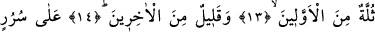
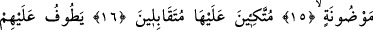
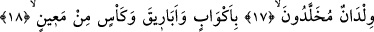
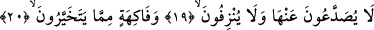
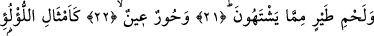
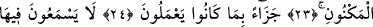
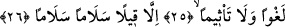
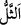

YAPTIKLARINA KARŞILIK
OLARAK VERİLİR
13. (Onların) çoğu önceki ümmetlerden,
14. Birazı da sonrakilerdendir.
15. Cevherlerle işlenmiş tahtlar üzerindedir.
16. Karşılıklı olarak oturup yaslanırlar.
17. Çevrelerinde, (hizmet için) ölümsüz gençler dolaşır;
18. Maîn çeşmesinden doldurulmuş testiler, ibrikler ve kadehlerle.
19. Bu şaraptan ne başları ağrıtılır, ne de akılları giderilir.
20. (Onlara) beğendikleri meyveler,
21. Canlarının çektiği kuş etleri,
22. İri gözlü hûriler,
23. Saklı inciler gibi,
24. Yaptıklarına karşılık olarak (verilir).
25. Orada boş bir söz ve günaha sokan bir laf işitmezler.
26. Söylenen, yalnızca «selâm, selâm»dır.
Yâni onların sayılara sığmayacak kadarı, önceki ümmetlerdendirler. Bunlar, Âdem
(a.s.)’dan bizim Peygamberimiz (s.a.)’e kadar peygamberlerin geçmiş ümmetleridir. Bu
tefsir, “öncekiler” sözü ile peygamberlerin kasdedilmediği takdirine göredir. Âyetteki (sülle) kelimesi “kırmak” anlamındaki (sell) kelimesinden türetilmiştir. Önce
geçen ümmetlerden olan bu topluluk sayıca çok olmalarına rağmen insanoğlunun
tamamına nisbetle adeta “kesilmiş bir parça” durumundadır.
Rağıb demiştir ki: (sülle), yünden toplu halde bulunan bir parçadır. Bu sebeple
arapçada koyun cinsine “sülle” denir. Toplanmak, toplu halde bulunmak anlamına
itibarla “öncekilerden bir sülle”, onlardan bir cemâat, bir topluluk demektir.